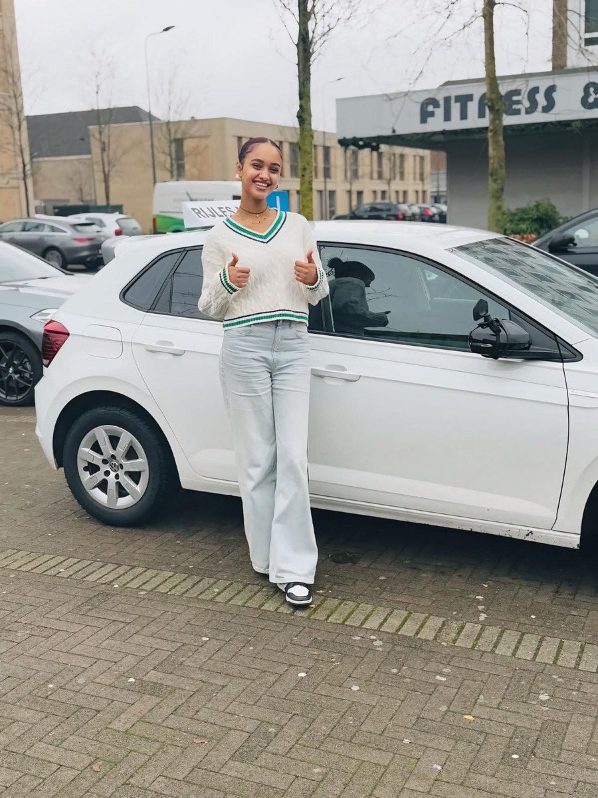
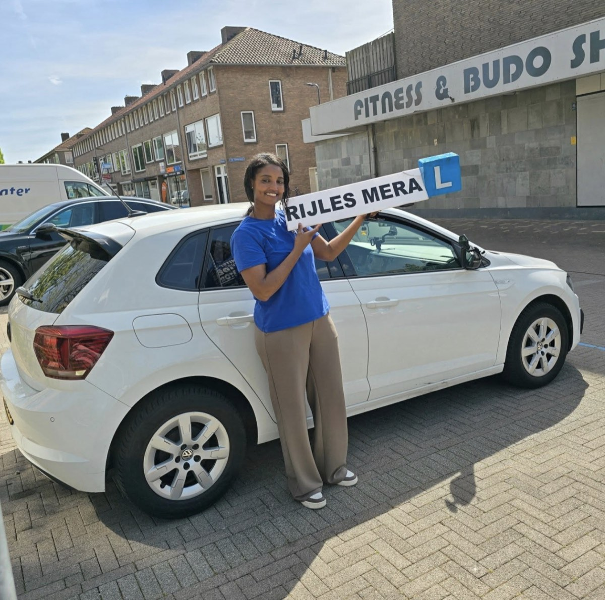
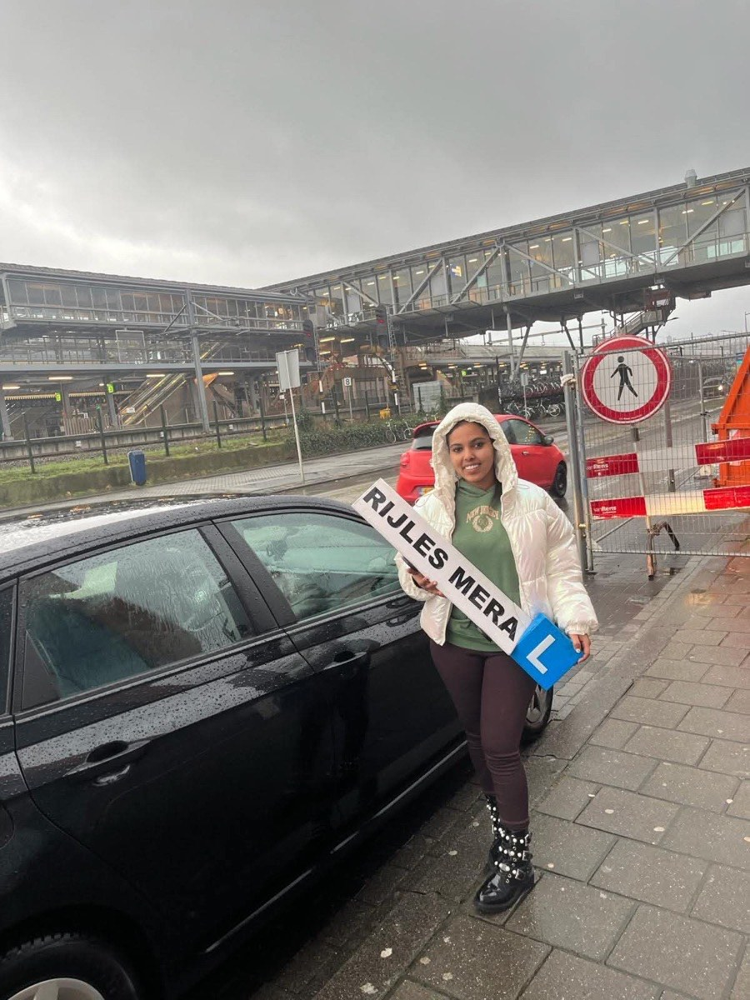
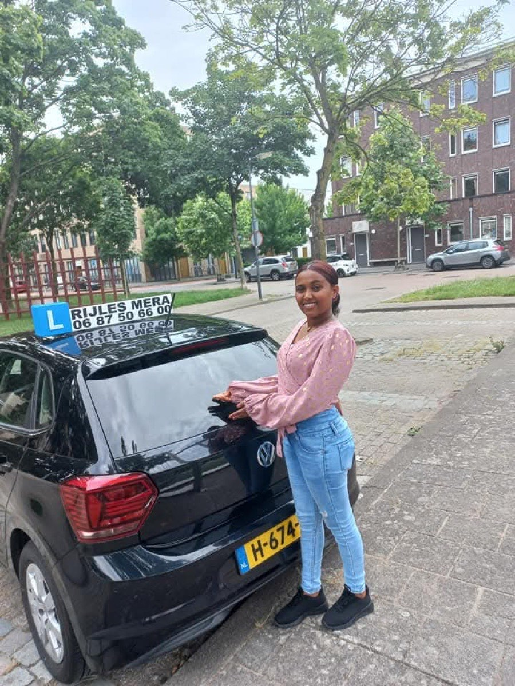
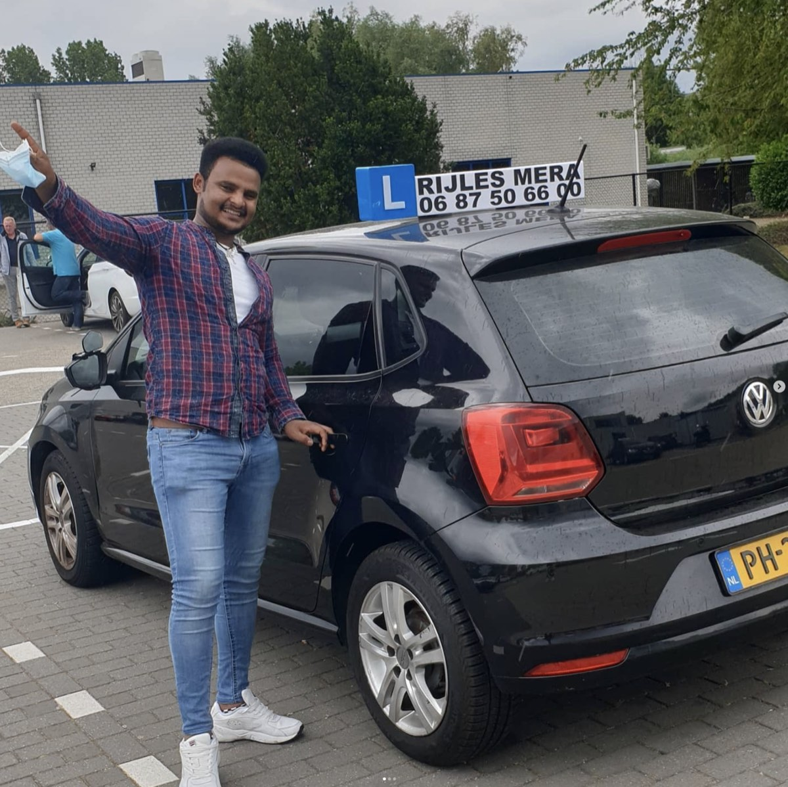
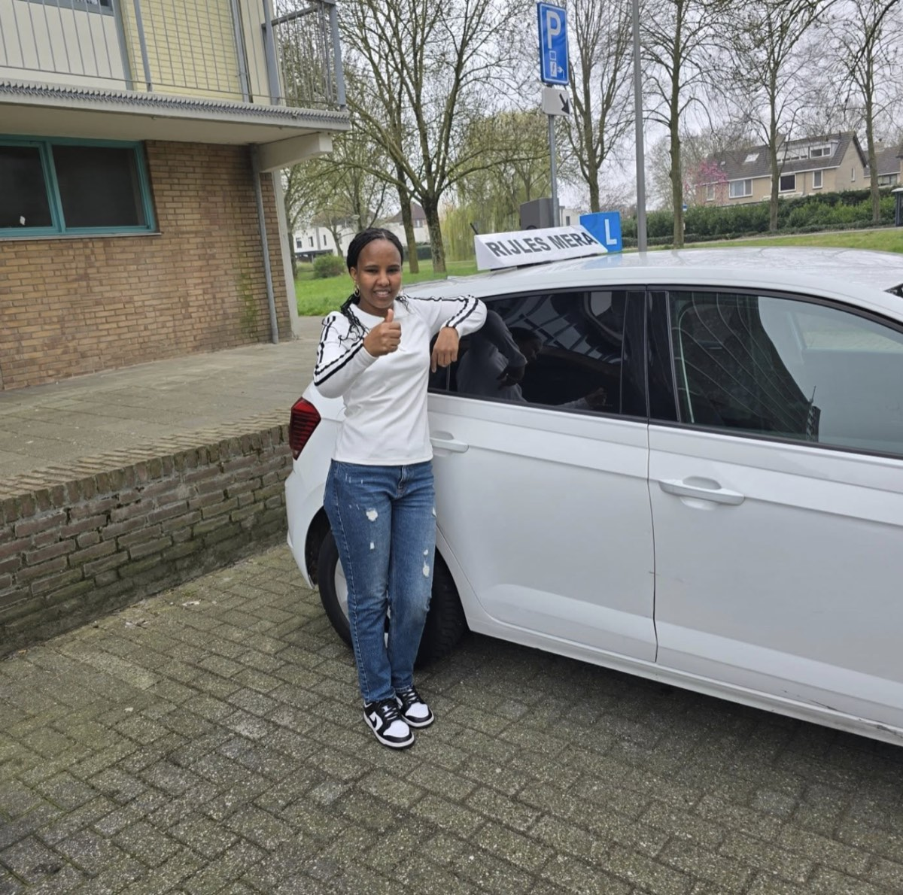
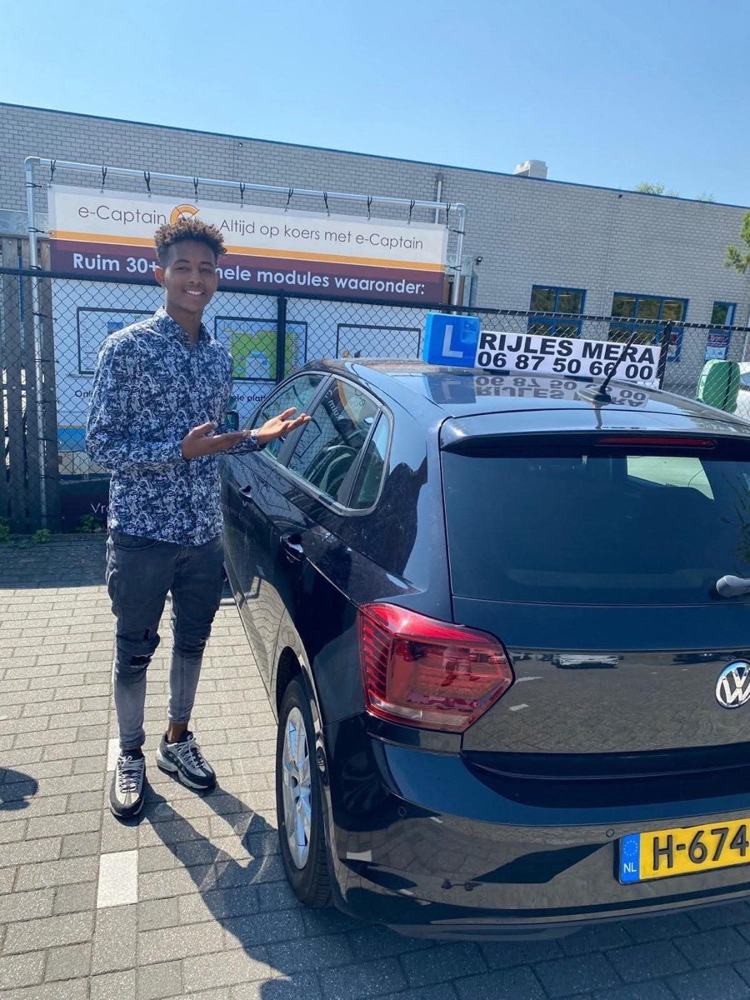
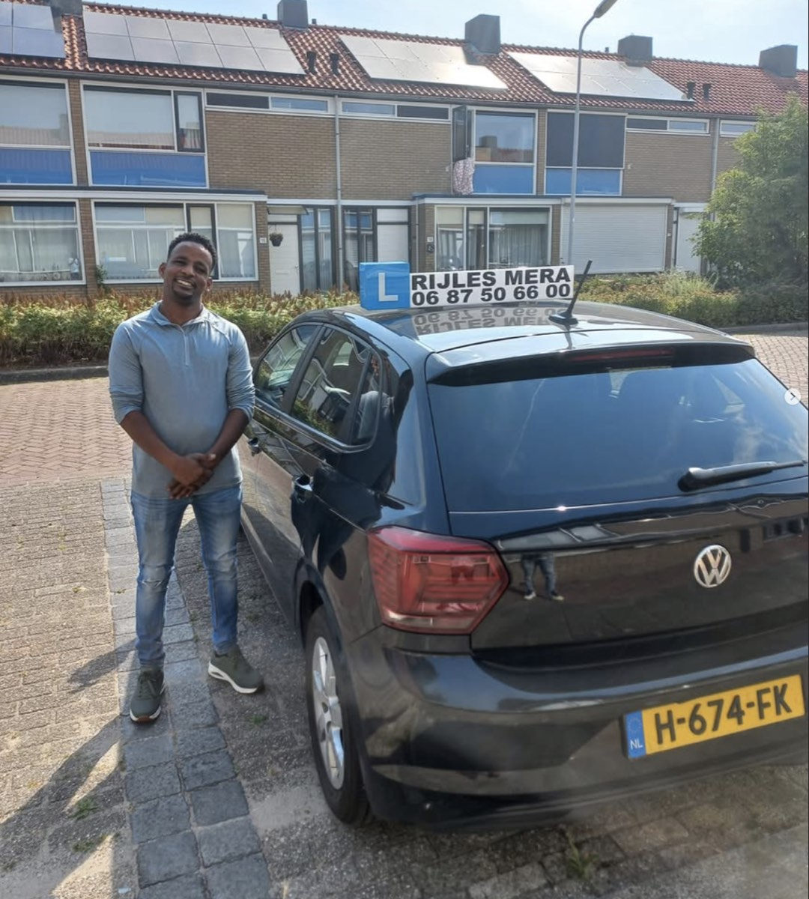
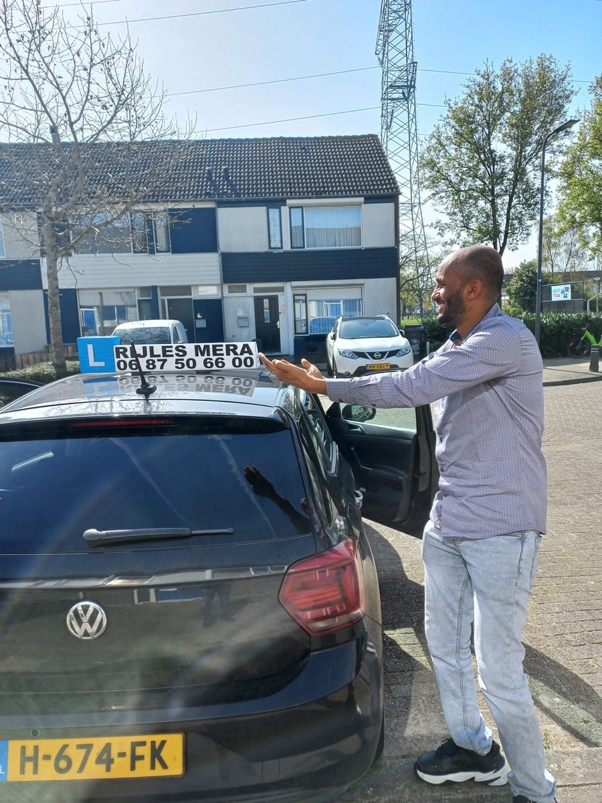
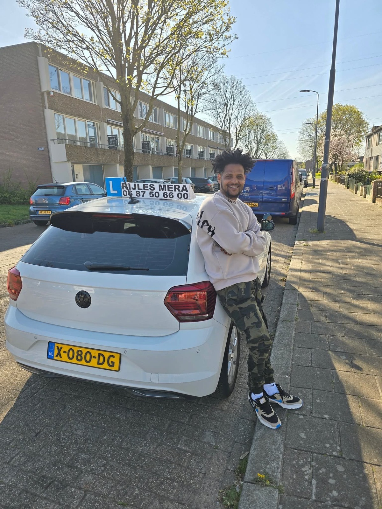

Mera is een uitstekende rij-instructeur. Hij is geduldig, rustig en legt alles duidelijk uit, waardoor leren autorijden veel minder spannend wordt. Tijdens iedere les geeft hij goede tips en bouwt hij stap voor stap je vertrouwen op. Dankzij zijn begeleiding voel ik mij veel zekerder en veiliger op de weg. Ik raad Mera zeker aan voor iedereen die op zoek is naar een professionele en betrokken rij-instructeur.
Y
Yonas Adhanom
Top rij-instructeur! Ik heb mijn rijlessen bij Rijles Mera als zeer prettig ervaren. Vanaf het eerste moment voelde ik mij op mijn gemak en gedurende het hele traject ben ik goed begeleid en geholpen. De uitleg was duidelijk en ik heb veel vertrouwen gekregen tijdens het rijden. Zeker een aanrader!

GeslaagdH
Hermon Germay
Rijles Mera is echt een top rijschool. Bedankt Mera voor je geduld, duidelijke uitleg en de fijne sfeer tijdens de lessen. Ik heb veel geleerd en het was altijd gezellig om samen te rijden. Ik ben erg tevreden over de begeleiding.
A
Abdelaziz Abdu
De rijlessen verliepen altijd soepel en prettig. De instructeur geeft duidelijke uitleg, blijft rustig en zorgt ervoor dat je je op je gemak voelt tijdens het rijden. Een fijne manier van lesgeven waardoor je met vertrouwen leert autorijden.

GeslaagdK
Kidane Angesom
Ik heb mijn rijbewijs in één keer gehaald dankzij de goede lessen van Rijles Mera. Ik heb erg genoten van de lessen en veel geleerd tijdens het traject. Ik raad iedereen aan om hier rijlessen te volgen.
B
Betty
Mera Rijschool is een hele fijne en geduldige rijschool. Alles wordt rustig en duidelijk uitgelegd en ik voelde mij altijd op mijn gemak tijdens de lessen. Dankzij de goede begeleiding heb ik mijn rijbewijs in één keer gehaald. Echt een aanrader!

GeslaagdS
Semere Welday
Mera is een super goede rij-instructeur. Dankzij zijn begeleiding en goede uitleg ben ik geslaagd voor mijn rijbewijs. Hartelijk bedankt voor alle lessen en hulp!
K
Ksanet Brhanemesqel
Ik heb een ontzettend fijne ervaring gehad met Rijles Mera. Merhawi is erg geduldig en de lessen waren altijd leerzaam en gezellig. Dankzij zijn begeleiding voel ik mij nu zelfverzekerd achter het stuur en heb ik mijn rijbewijs ook nog eens in één keer gehaald. Ik kan Rijles Mera echt aan iedereen aanraden!

GeslaagdA
Asmita Tekle
Ik heb een hele goede tijd gehad tijdens mijn rijlessen. Mera is een geweldige instructeur die duidelijk uitlegt en goed begeleidt. Dankzij zijn hulp ben ik in één keer geslaagd. Ik ben hem ontzettend dankbaar voor alles!
M
Michael Zerea
Vandaag ben ik erg blij omdat ik mijn eerste rijexamen heb gehaald. Dit is het resultaat van het harde werk en de goede begeleiding van mijn instructeur Mera. Ik wil hem hiervoor enorm bedanken. Rijles Mera is een geweldige rijschool!

GeslaagdD
Dawit Gootom
Ik ben in één keer geslaagd en ben daar super blij mee. Ik heb veel geleerd tijdens de lessen en ben erg tevreden over de begeleiding. Echt een aanrader!
W
Weldeab Mekonnen
Ik ben in één keer geslaagd en ben daar erg blij mee. Dankzij de goede begeleiding en duidelijke uitleg van Mera heb ik veel geleerd en vertrouwen gekregen tijdens het rijden. Ik ben erg trots en wil hem heel erg bedanken.

GeslaagdM
Mebrihit Hagos
Ik heb mijn rijbewijs gehaald bij Rijschool Mera en kan bevestigen dat hij een zeer behulpzame en deskundige rij-instructeur is. Ik ben erg tevreden over de lessen en de begeleiding die ik heb gekregen. Ik kan deze rijschool zeker aanbevelen.
A
Aranshi Yemane
Bedankt voor alle geduld en duidelijke uitleg tijdens de rijlessen. Ik heb altijd met plezier gereden en veel geleerd. Door jouw manier van lesgeven heb ik veel vertrouwen gekregen in het verkeer.

GeslaagdS
Simret Gebreyonas
Tijdens de lessen heb ik geleerd om meer zelfvertrouwen te krijgen en beter om te gaan met situaties op de weg. De begeleiding heeft mij geholpen om veiliger en zekerder te rijden.
M
Medhanie Mekonnen Tewelde
Hallo Mera, bedankt voor alle fijne lessen. De lessen waren leerzaam en gezellig en ik ben erg blij met de goede begeleiding. Dankzij jou ben ik geslaagd. Bedankt voor alles!

GeslaagdA
Abiel Tnsue
Geweldige lessen gehad en in de kortst mogelijke tijd mijn rijbewijs gehaald. Dankzij de goede uitleg en begeleiding van Mera ben ik in één keer geslaagd. Hartelijk bedankt voor alles!
I
Isaak Abraham
Beste rijschool van Nederland. Mera geeft les met veel passie en is een geweldige persoon en instructeur. Bedankt voor alles Merhawi!

GeslaagdH
Hani Berhe
Ik heb mijn rijbewijs in één keer gehaald dankzij de fijne lessen bij Mera. Het was altijd gezellig en ik heb veel geleerd. Ik raad iedereen aan om hier rijlessen te volgen.
F
Fnan Sium
De beste rijlessen bij Mera. Het is een hele goede instructeur die duidelijk uitlegt en je goed begeleidt tijdens het hele traject.

GeslaagdB
Binam Laqew
Hij is super sociaal en doet zijn werk heel nauwkeurig. Dankzij Mera heb ik mijn rijbewijs snel kunnen behalen. Een fijne instructeur die echt met je meedenkt.
T
Tesfaldet Simon
Ik heb altijd met veel plezier mijn rijlessen gevolgd. Mera is erg behulpzaam en werkt hard om je te helpen jouw doel te bereiken. Bedankt voor de goede begeleiding!
M
Medhanie Bokuretsion
Een hele aardige en deskundige instructeur. Vanaf het moment dat ik bij Mera begon met lessen, heb ik snel vooruitgang geboekt en mijn rijbewijs gehaald. Bedankt voor de goede lessen!
S
Snit Hintsa
Het was een geweldige ervaring en een leuke tijd tijdens de rijlessen. Bedankt Mera voor alle begeleiding, geduld en alles wat je mij hebt geleerd!
Alle reviews zijn woordelijk overgenomen uit de berichten die leerlingen zelf achterlieten. Bekijk de reviews op Google.